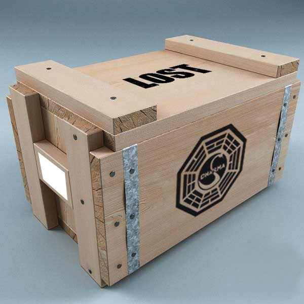

UFG
Iniciei o curso de Design Gráfico na UFG em 2010, me formando no final de 2015, neste período destaco os seguintes projetos:
Cartaz Guerra e Paz
Cartaz de uma exposição fictícia de Cândido Portinari para a matéria História da Arte Brasileira:
O cartaz tem como inspiração os painéis conhecidos como Guerra e Paz, utilizando um degradê entre suas duas cores predominantes, além de dividir o cartaz em quadros assim como cada obra também foi dividida durante sua produção:

Coletânea Especial de Lost
Projeto desenvolvido para matéria de embalagem com a proposta de desenvolver uma edição de colecionador de DVDs da série Lost. Todos os elementos do projeto são baseados em características do próprio enredo da série. Para mais informações conferir o memorial descritivo completo do projeto.


Capa de CD Terra Celta
"E quando as canecas se chocam/ cerveja se espalha no ar/ quando as canecas entornam/ o mundo começa a girar/ qualquer bêbado amigo/ aqui é MEU IRMÃO!/ até o último gole/ até cair no chão!"
Proposta de Capa de CD para banda Terra Celta que tem características da música irlandesa, por isso a inspiração veio do rótulo da Cerveja Guinness da Irlanda:

Rótulo Cachaça Presidenta
Rótulo de uma cachaça fictícia chamada “Presidenta”, baseada nas xilogravuras brasileiras do século XVIII, muito utilizadas em rótulos de produtos naquela época: